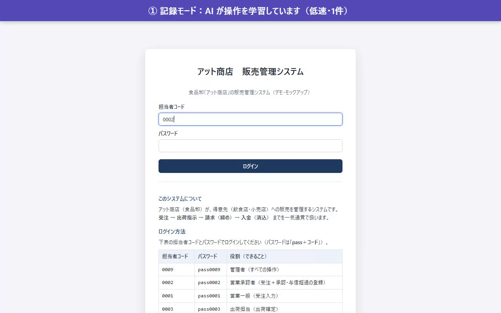
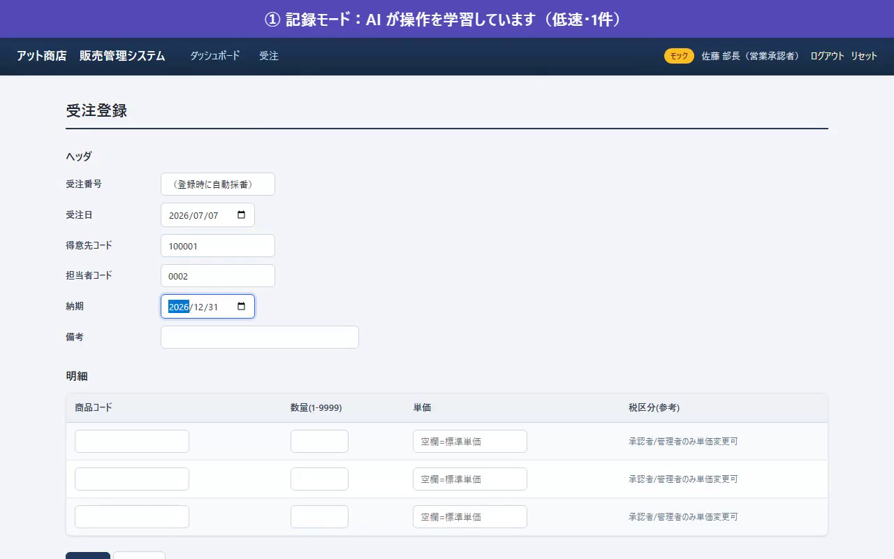
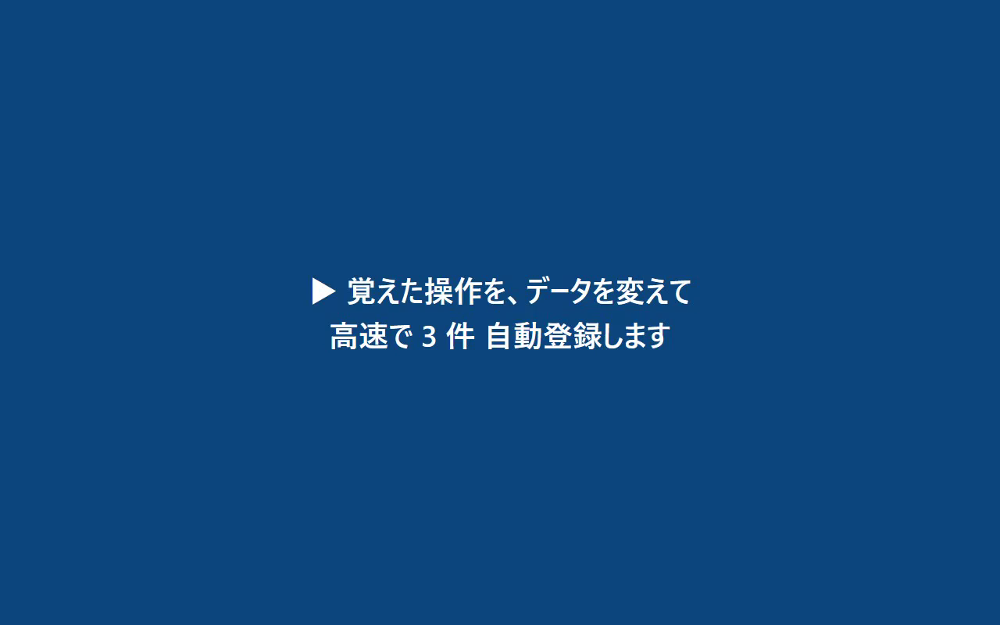
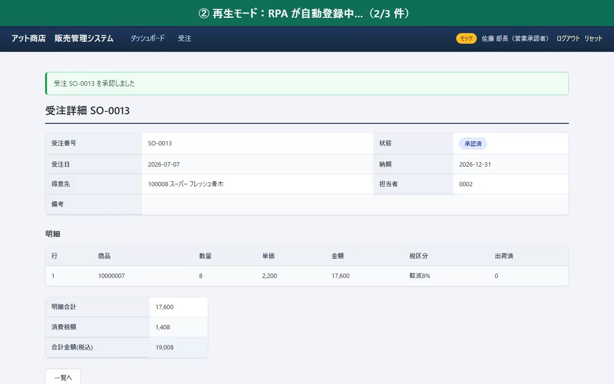
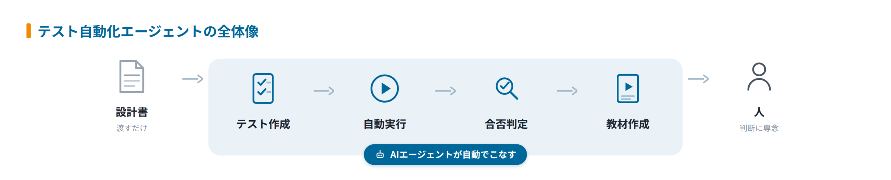
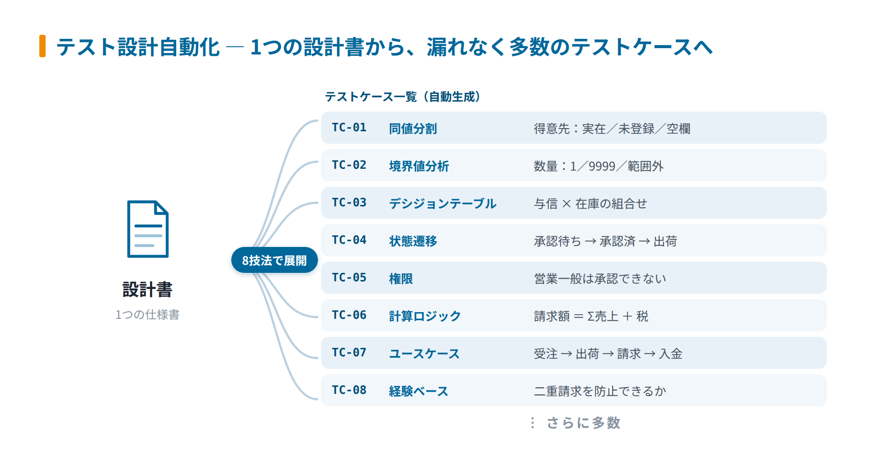
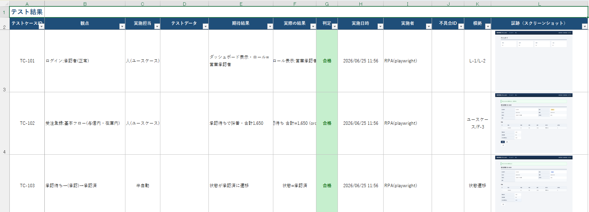

アットストリーム — 機能・導線・画面
確認日：2026年10月27日。全体比較・画面／動画ギャラリー
調査範囲
設計書のケース展開、RPA作成、実行・証跡・判定・不具合・再テストを扱う。公開動画は販売管理モック。
26秒の公式記録・再生動画を収録。2分20秒の別動画はテスト対象モック自体の操作ガイドなので検証製品のUI動画として数えない。
作業の流れ
設計書 → ケース設計 → RPAシナリオ → 手動記録 → データ違いで再生 → 証跡・判定 → 不具合台帳 → 再テスト
機能の構成
テスト設計自動化 / 実行自動化 / 証跡・不具合管理等のサービス別構成。公開のケース表・販売管理モックの録画。
下表は公開説明・文書の要約。実操作した範囲は画面一覧と調査範囲に限定し、表全体を実機検証済みとはしない。
| 段階 | 画面・機能 | 入力・操作と次の行動 |
|---|---|---|
| 入力 | 設計書 | 項目・ルール・状態遷移を読み取る。 |
| 設計 | 設計技法・case一覧 | 境界・組合せ・遷移等の観点へ展開する図と生成表がある。 |
| 自動化 | RPA scenario | ケースを対象操作に接続する。 |
| 記録 | モックの手動操作 | 公開動画で受注登録・承認を1件記録する様子。 |
| 再生 | データ別3件 | 記録した操作を違うデータで高速に再生するデモ。 |
| 証拠・判定 | 画面取得・合否 | 実行画面を残し、判定できる範囲で自動化する。 |
| 不具合 | 台帳・再テスト | 不具合記録から修正後の確認へつなぐ。 |
人の担当と比較上の着眼点
対象と期待、適用構成、AIで判定できない箇所を確認する。
調査者の解釈：ケース設計・実行・証拠を分業して提供する形態。モックの成功を実顧客での成功と混同しない。 製品性能の優劣を実証した結論ではない。
動画と見る場面
- 販売管理モックを手動記録→3件自動再生（25.6秒、official-product-video）。公式の掲載元。
見る場面：
5秒：1件の手動記録、
10秒：受注入力、
16秒：データ違いの再生、
22秒：3件目の確認。


画面一覧
| 画面 | 種別 | 出典 |
|---|---|---|
 テスト自動化エージェントの全体像 |
official-diagram | 掲載元 |
 1つの設計書から8つの設計技法を用いて多数のテストケースへ展開する流れ |
official-diagram | 掲載元 |
 自動生成したテストケース一覧のサンプル画面 |
official-ui-image | 掲載元 |